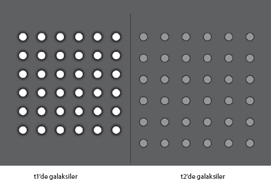
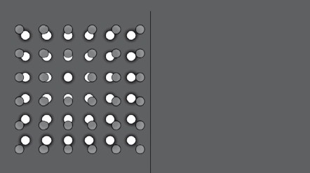
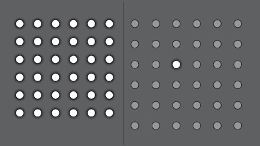
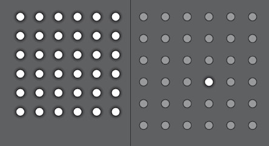
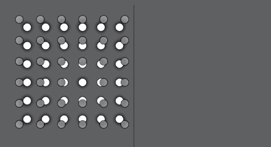
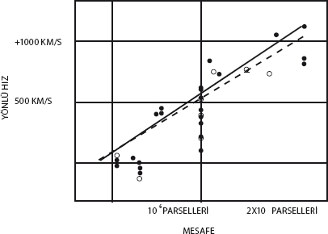
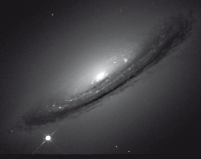

Herhangi bir yolculuğa eşlik eden İlk Gizem şudur:
Yolcu başlangıç noktasına en başta nasıl ulaşmıştır?
Louıse Bogan, Journey Around My Room
(Odamın Çevresinde Yolculuk)
Karanlık ve fırtınalı bir geceydi.
1916'nın başlarına gelindiğinde Albert Einstein hayatının en büyük eserini henüz tamamlamış, kendisinin Genel Görelilik Kuramı dediği yeni bir kütleçekim kuramını yoğun entellektüel çabaları sonucu geliştirmiş bulunuyordu. Gelgelelim bu kuram salt yeni bir kütleçekim kuramı değildi. Uzay ve zaman hakkında da yeni bir kuramdı. Nesnelerin evrende nasıl hareket ettiğini açıklamakla kalmayıp evrenin kendisinin nasıl evrilmiş olabileceğini de açıklayan ilk bilimsel kuramdı.
Fakat bir pürüz vardı. Einstein kuramını, evrenin bir bütün olarak betimlenmesine uygulamak istediğinde, kuramın içinde yaşadığımız evreni betimliyormuş gibi görünmediği açıklık kazanmıştı.
Bugün, bundan neredeyse 100 yıl sonra, evreni resmetme biçimimizin tek bir insan ömrü içinde ne ölçüde değiştiğini tam anlamıyla takdir edebilmemiz zor. 1917'de bilim camiasına göre evren durağan ve ebediydi; engin, sonsuz, karanlık ve boş uzayla çevrelenmiş tek bir galaksiden, bizim galaksimiz Samanyolu'ndan oluşuyordu. Nihayetinde gözlerinizi geceleyin gökyüzünde gezdirdiğinizde ya da küçük bir teleskopla baktığınızda göreceğiniz şey buydu, o zamanlarda da işlerin başka türlü olmasından şüphelenmek için bir gerekçe yoktu.
Einstein'ın kuramında, ondan önce Newton'ın kütleçekim kuramında olduğu gibi, kütleçekim bütün nesneler arasında etkin olan bir çekim gücünden ibaretti. Bu da, uzayda, ebediyen kendi halinde hareketsiz bırakılmış bir dizi kütle olmasını imkansız kılar. Bu kütlelerin kütleçekimden ileri gelen karşılıklı çekimleri, görünürde durağan olan bir evrene apaçık bir tezat oluşturarak nihayetinde içe doğru çökmelerine yol açacaktır.
Genel Görelilik kuramının o zamanlar geçerli olan evren tablosuyla tutarlıymış gibi görünmemesi, Einstein için düşünebileceğinizden daha büyük bir darbe oldu. Bunun nedenlerini açıklarken, Einstein ile Genel Görelilik hakkında içimi her zaman sıkmış olan bir miti de dağıtayım. Genellikle Einstein'ın bir odaya kapanıp saf düşünceyi ve aklı kullanarak yıllarca tek başına çalıştığı, sonra da gerçeklikten bağımsız bir halde (bugünkü bazı sicim kuramcıları gibi herhalde!) güzelim kuramını ortaya çıkardığı varsayılır. Gelgelelim hiçbir şey hakikatten bu kadar uzak olamaz.
Einstein her zaman, deneyler ve gözlemlerin derinden rehberliğiyle yol almıştı. Zihninde birçok "düşünce deneyi" gerçekleştirir, on yılı aşkın bir süre boyunca kafa patlatırken yeni bir matematik öğrenmiş, bu süreçte birçok yanlış kuramsal yola saptıktan sonra nihayetinde matematiksel olarak gerçekten de güzel bir kuram ortaya çıkarmıştı. Ne var ki Genel Görelilik'le arasındaki aşk ilişkisini kurarken yaşadığı tek önemli an, gözlemle ilgiliydi. Einstein Alman matematikçi David Hilbert'la rekabet halinde, kuramına son şeklini vermeye çalıştığı telaş dolu o son haftalarda, belirsiz bir astrofiziksel sonuç olarak görünebilecek bir şey için, Merkür'ün Güneş etrafındaki yörüngesinde "perihelion"da (Güneş'e en yakın yaklaşma noktasında) hafif bir ilerleme hakkındaki tahminleri hesaplamak amacıyla genel görelilik denklemlerini kullanmıştı.
Astronomlar, Merkür'ün yörüngesinin, Newton'ın tahminlerinden hafifçe uzaklaştığını uzun zamandır belirtiyorlardı. Merkür'ün yörüngesi, kapanan mükemmel bir elips olmak yerine inanılmaz derecede küçük bir oranda, yüzyılda 43 ark saniye, yani bir derecenin yüzde 1'i kadar ilerliyordu. (Merkür Güneş etrafında bir kez döndükten sonra tam olarak aynı noktaya gelmiyor, eliptik yörüngenin yönelimi Güneş etrafında her turda hafifçe kayıyor, bu kaymalar sarmal benzeri bir örüntü meydana getiriyordu.)
Einstein Genel Görelilik kuramını kullanarak Merkür'ün yörüngesini hesapladığında bu rakam tam doğru çıktı. Einstein'ın biyografisini kaleme alanlardan Abraham Pais'nin betimlediği üzere: "İnanıyorum ki bu keşif, Einstein'ın bilimsel hayatında, belki de bütün hayatında yaşadığı, duygusal bakımdan en güçlü deneyimdi." Einstein sanki "içinde bir şey patlamışcasına" kalp çarpıntıları yaşadığını söylüyordu. Bundan bir ay sonra bir dostuna kuramını "benzersiz güzellikte bir kuram" diye betimlediğinde, kuramının matematiksel biçiminden duyduğu memnuniyet gözle görülebiliyordu.
Ne var ki Genel Görelilik ile gözlem arasındaki belirgin uyuşma fazla uzun sürmedi (her ne kadar Einstein'ın daha sonradan kuramında en büyük hatası olarak anacağı bir değişiklik yapmasına yol açmış olsa da. Ama bu konudan daha sonra daha geniş bahsedeceğiz). Herkes (ABD'deki bazı okulların yönetim kurulları dışında) artık evrenin durağan olmadığını, genişlediğini, bu genişlemenin 13,7 milyar yıl önceki inanılmaz derecede sıcak ve yoğun bir Büyük Patlama'yla başladığını biliyor. Biz de galaksimizin, gözlenebilir evrendeki yaklaşık 400 milyar galaksiden yalnızca biri olduğunu biliyoruz, bu da aynı derecede önemli. Dünya'nın haritasını ilk çıkaranlara benziyoruz, evrenin haritasını en geniş ölçekte çıkarmaya yeni başlamışız. Son yılllarda evren tablomuzda devrimci bazı değişikliklere tanık olunması pek şaşırtıcı değil.
Evrenin durağan olmadığı, aslında genişlediği keşfinin derin felsefi ve dini anlamları vardır, çünkü evrenimizin bir başlangıcı olduğunu düşündürür. Bir başlangıç yaratılış anlamına gelir, yaratılış da hisleri karıştırır. Evrenimizin genişliyor olduğunun 1929'daki keşfinin ardından bir Büyük Patlama kavrayışının bağımsız bir biçimde ampirik olarak doğrulanması için 50-60 yıl geçmiş olsa da Papa XII. Pius 1951'de Büyük Patlama'nın Yaratılış'ın kanıtı olduğunu müjdelemişti:
"Bugünkü bilim, yüzyıllar ötesine bir hamlede uzanarak o ilk 'Işık Olsun' anına, hiçlikten bir ışık ve ışın denizinin patlak verdiği, elementlerin parçalanıp, öğütülüp milyonlarca galaksi oluşturduğu o ana tanıklık etmeyi başarmış gibi görünüyor. Dolayısıyla fiziksel kanıtlara özgü bu somutlukla, bilim, evrenin olumsallığını ve Dünya'nın Yaratıcı'nın ellerinden çıktığı devirle ilgili sağlam temellere dayanan çıkarsamayı doğrulamıştır. Dolayısıyla yaratılış gerçekleşmiştir. Diyoruz ki: Dolayısıyla bir Yaratıcı vardır. Dolayısıyla Tanrı vardır!"
Hikayenin tamamı aslında biraz daha ilginçtir. Aslına bakarsanız, bir Büyük Patlama olduğunu ileri süren ilk kişi George LeMaître adında Belçikalı bir rahip ve doktordu. LeMaître, göz alıcı bir yetkinlik bileşimiydi. Çalışmalarına mühendis olarak başlamış, I. Dünya Savaşı'nda topçuluk yapmış, madalyalar kazanmış, sonra 1920'lerin başında rahiplik öğrenimi görürken matematiğe yönelmişti. Bundan sonra kozmolojiye geçmiş, ilk olarak ünlü İngiliz astrofizikçi Sir Arthur Stanley Eddington'la çalışmış, ardından Harvard'a gitmiş ve nihayetinde MIT'den fizik dalında ikinci bir doktora almıştı.
LeMaître 1927'de ikinci doktorasını tamamlamadan önce Einstein'ın Genel Görelilik denklemlerini çözmüş, bu kuramın durağan olmayan bir evren öngördüğünü, yaşadığımız evrenin aslında genişlediğini ileri sürdüğünü göstermişti. Bu kavrayış o kadar aykırı görünüyordu ki Einstein'ın kendisi bile renkli bir itirazla karşı koymuştu: "Matematiğin doğru, ama fiziğin berbat."
Yine de LeMaître ilerlemeye devam etmiş, genişleyen evrenimizin hayatına aslında son derece küçük bir nokta olarak başladığını 1930'da ileri sürmüştü; LaMaître bu noktacığa "ilk atom" diyordu ve bu başlangıcı da yaratılışı anlatan Tekvin'e atıfla herhalde, "Dünü olmayan gün" olarak sunuyordu.
İşte Papa Pius'un öyle selamladığı Büyük Patlama ilk olarak bir rahip tarafından ileri sürülmüştü. LeMaître'in papalığın bu değerlendirmesiyle irkildiği düşünülebilir, ama zihni bu bilimsel kuramın teolojik bazı sonuçları olabileceği düşüncesiyle doluydu zaten; fizikçimiz 1931'de Büyük Patlama üzerine kaleme aldığı bir sunumun taslağından bu konuyla ilgili bir paragrafı çıkarmıştı.
LeMaître, Papa'nın 1951'de yaptığı o konuşmada Yaratılış'ı Büyük Patlama yoluyla kanıtlama iddiasına itirazını aslında daha sonra açıkça dile getirdi (daha sonra kuramının hatalı olduğu kanıtlanırsa, Roma Katolik Kilisesi'nin Yaratılış'la ilgili iddialarının tartışmalı hale geleceğini fark etmişti.) O sıralarda LeMaître Vatikan'ın Papalık Akademisi'ne seçilmiş bulunuyordu, daha sonra buranın başkanı olacaktı. Kendisi "Görebildiğim kadarıyla, böyle bir kuram herhangi bir metafizik ya da dini sorunun tümüyle dışında kalıyor," diyordu. Papa bu konuyu halka hitaben yaptığı konuşmalarda bir daha gündeme getirmedi.
Buradan alınacak kıymetli bir ders vardır. LeMaître'in de fark ettiği üzere Büyük Patlama'nın gerçekten olup olmadığı teolojik değil, bilimsel bir sorudur. Üstelik, Büyük Patlama gerçekleşmiş olsa bile (ki bütün kanıtlar artık ezici bir ağırlıkla bunu desteklemektedir) insan bunu dini ya da metafizik kanılarına göre farklı biçimlerde yorumlamayı tercih edebilir. Büyük Patlama'yı eğer gerek duyuyorsanız bir Yaratıcı'nın varlığını düşündüren bir hadise olarak görmeyi tercih edebileceğiniz gibi, Genel Görelilik matematiğinin, herhangi bir ilahi gücün müdahalesi olmaksızın evrenin evrimini başlangıcına dek açıkladığını da savunabilirsiniz. Ama bu gibi metafizik spekülasyonlar Büyük Patlama'nın fiziksel geçerliliğinden bağımsızdır, onu kavrayışımızla da bir ilgileri yoktur. Elbette ki genişleyen bir evrenin salt varlığının ötesine geçip onun kökenini açıklayabilecek fiziksel ilkeleri anlamaya çalıştığımızda bilim bu spekülasyonu daha da aydınlatabilir, tartışacağım üzere aydınlatmaktadır da.
Her halûkârda LeMaître de, Papa Pius da bilim dünyasını evrenin genişlediğine inandıramamışlardı. İyi bilimin tamamında söz konusu olduğu üzere, kanıtlar titiz gözlemlerden gelmişti. Bu örnekte gözlemci Edwin Hubble'dı. Hubble insanlığa hâlâ büyük inanç duymamı sağlayan bir isimdir, çünkü yola bir avukat olarak çıkmış, sonradan astronom olmuştur.
Hubble daha önceleri, 1925'te, o zamanlar dünyanın en büyük teleskopu olan, Wilson Dağı'ndaki 100 inçlik yeni Hooker teleskopuyla önemli bir atılım gerçekleştirmişti. (Bir karşılaştırma yapabilmek için belirteyim: Artık yarıçap bakımından bundan on kat, alan olarak da bundan 100 kat büyük teleskoplar yapıyoruz!) O zamana kadar, o tarihlerde elde bulunan teleskoplarla astronomlar galaksimizde basit yıldızlar olmayan nesnelerin bulanık görüntülerini ayırt edebilmişlerdi. Bunlara, Latincede "bulanık şey" (aslında "bulut") anlamına gelen sözcüğü kullanarak Nebula diyorlardı. Bu nesnelerin galaksimizin içinde mi yoksa dışında mı bulunduğunu da tartışıyorlardı.
O zamanlar evren hakkındaki yaygın görüş galaksimizin olup olabilecek her şey olduğu yönündeydi, bu yüzden de çoğu astronom bu nesnelerin "galaksimizin içinde" olduğunu söyleyen, başını Harvard'daki meşhur astronom Harlow Shapley'nin çektiği cephede yer alıyordu. (Shapley beşinci sınıfta okuldan atılmış, kendi kendine çalışmış, nihayetinde Princeton'a gitmişti. Müfredatta karşısına çıkan ilk konuyu seçerek astronomi çalışmaya karar vermişti. Yeni ufuklar açan çalışmasıyla Samanyolu'nun önceden düşünülenden daha geniş olduğunu, Güneş'in Samanyolu'nun merkezinde değil, ücra, ilgisiz bir köşesinde bulunduğunu göstermişti. Shapley astronomi alanında alt edilmesi zor bir güçtü, bu yüzden de nebulaların niteliğiyle ilgili görüşlerinin hatırı sayılır bir etkisi olmuştu.)
Hubble, yaygın deyişle sarmal nebulalar hakkında iki yıldır sürdürdüğü çalışmanın sonuçlarını 1925'te yılın ilk günü açıkladı, bu çalışması sırasında, bugün Andromeda olarak bilinen nebula da dahil olmak üzere bu nebulalarda Cepheid değişken yıldızı denilen bir tür değişken yıldız tespit etmeyi başarmıştı.
İlk kez 1784'te gözlenen Cepheid değişken yıldızları, parlaklıkları belirli bir zaman dilimi içinde değişen yıldızlardır. 1908'de ismi duyulmamış, o sıralarda takdir edilmeyen bir astronom adayı olan Henrietta Swan Leavitt, Harvard College Rasathane'sinde "hesap uzmanı" olarak görev yapıyordu. ("Hesap uzmanları" rasathanenin fotoğraf levhalarında kayıtlı yıldız parlaklıklarını kataloglamakla görevliydiler, o zamanlar kadınların rasathane teleskoplarını kullanmalarına izin verilmiyordu.) Bağımsız bir kilise rahibinin kızı olan, ilk göçmenlerin soyundan gelen Leavitt hayret verici bir keşifte bulunmuştu, bu keşfini 1912'de daha da aydınlığa kavuşturacaktı. Leavitt, Cepheid yıldızların parlaklıklarıyla, parlaklıkların değişme periyodu arasında düzenli bir ilişki olduğunu fark etmişti. Bu demek oluyordu ki parlaklığının değişim periyodu bilinen tek bir Cepheid yıldızın uzaklığı ölçülebilirse (1913'te ölçülmüştü) aynı değişim periyoduna sahip başka Cepheid yıldızların parlaklıklarının ölçülmesi, bu başka yıldızların uzaklıklarının ölçülmesini de mümkün kılacaktı!
Yıldızların gözlenen parlaklıkları, yıldızın uzaklığının karesiyle ters orantılı olarak azaldığından (ışık, alanı uzaklığının karesi kadar artan bir küreden her yöne eşit olarak yayılır, ışık daha geniş bir alana yayılırsa, herhangi bir noktada gözlenen ışığın yoğunluğu alanın büyüklüğüyle ters orantılı olarak azalır) uzaktaki yıldızların uzaklıklarının belirlenmesi her zaman astronominin başlıca zorluklarından biri olmuştu. Henrietta'nın keşfi bu alanda bir devrim yarattı. (Nobel Ödülü konusunda hiçe sayılan Hubble, sık sık Leavitt'in çalışmasının ödüle layık olduğunu söylerdi, gerçi bunu söylerken kendi yararını düşünmüş, sırf kendisini sonraki çalışmalarıyla bu ödülü Leavitt'le paylaşması doğal bir rakip olarak gördüğünden bunu önermiş olabilir.) İsveç Kraliyet Akademisi 1924'te Leavitt'i Nobel'e aday göstermek için resmi çalışmalara başladığında, Leavitt'in üç yıl önce kanserden öldüğü öğrenildi. Kuvvetli karakteriyle, kendi kendisinin reklamını yapma yeteneğiyle, bir gözlemci olarak becerileriyle Hubble herkesin tanıdığı bir isim haline gelirken, Leavitt yalnızca astronomi tutkunlarının bildiği biri olacaktı.
Hubble Cepheid yıldızlarla ilgili ölçümünü ve Leavitt'in bulduğu periyod-parlaklık ilişkisini Andromeda ile başka birkaç nebuladaki Cepheid yıldızların Samanyolu Galaksisi'nde yer alamayacak kadar uzak olduklarını kesin olarak kanıtlamak için kullandı. Andromeda'nın bizimkine neredeyse tıpatıp benzeyen bir başka ada evren, bir başka sarmal galaksi olduğu, bugün bildiğimiz üzere, gözlenebilir evrenimizde bulunan 400 milyar galaksiden biri olduğu keşfedildi. Hubble'ın vardığı sonuç o kadar kesindi ki o sıralarda Leavitt'in çığır açıcı çalışmasını yaptığı Harvard College Rasathanesi'nin yöneticisi olmuş Shapley de dahil olmak üzere astronomi camiası Samanyolu'nun etrafımızdaki her şey olmadığını çabucak kabul etti. Bilinen evrenimizin boyutları birden, tek bir sıçramada, yüzyıllar içinde olduğundan çok daha fazla genişlemişti! Niteliği de değişmişti, neredeyse başka her şey de.
Bu büyük keşiften sonra Hubble şöhretinin üstüne yatabilirdi, ama büyük balık, yani büyük galaksiler peşindeydi. Çok daha uzak galaksilerdeki daha sönük Cepheid yıldızları ölçerek evrenin haritasını çok daha geniş ölçeklerde çıkardı. Gelgelelim bunu yaparken çok çok daha dikkat çekici bir şeyi keşfetti: Evren genişliyordu!
Hubble bu sonuca, ölçtüğü galaksi uzaklıklarını, Amerikalı başka bir astronomun, Vesto Slipher'ın yaptığı başka bir dizi ölçümle karşılaştırarak varmıştı. Slipher bu galaksilerden gelen ışık tayflarını ölçmüştü. Bu tayfların varlıkları ve niteliklerinin anlaşılması için sizleri modern astronominin başlangıç noktasına götürmem gerekiyor.
Astronomi alanındaki en önemli keşiflerden biri, yıldızları oluşturan madde ile Dünya'yı oluşturan maddelerin büyük ölçüde aynı olmasıdır. Modern bilimdeki birçok şey gibi, bu keşfin de kökleri Isaac Newton'a uzanır. O zamanlar genç bir bilim insanı olan Newton, 1665'te, panjurda açtığı küçük bir delik dışında odasını karartarak elde ettiği incecik bir gün ışığı huzmesini bir prizmadan geçirmiş, gün ışığının bildiğimiz gökkuşağı renklerine ayrıldığını görmüştü. Güneş'ten gelen beyaz ışığın bütün bu renkleri içerdiği sonucuna varmıştı. Yanılmıyordu.
Ondan 150 yıl sonra bir başka bilim insanı saçılan ışığı daha dikkatli inceledi ve renklerin ortasında karanlık bantlar bulunduğunu keşfetti, bu bantların Güneş'in dış atmosferinde, belli renkler, yani dalga boylarındaki ışığı emen maddelerin varlığından ileri geldiği sonucuna vardı. Bilindikleri adıyla "emilme çizgileri", Dünya üzerinde hidrojen, oksijen, demir, sodyum ve kalsiyum da dahil olmak üzere bilinen maddelerce emildiği ölçülen dalga boylarına denk düşüyordu.
1868'de bir başka bilim insanı Güneş'in ışık tayfının sarı kısmında, Dünya üzerinde bilinen hiçbir elemente tekabül etmeyen iki yeni emilme çizgisi gözlemledi. Bunların, helyum adını verdiği yeni bir elementten kaynaklandığına karar verdi. Bir kuşak sonra Dünya'da da helyumun varlığı keşfedildi.
Başka yıldızlardan gelen ışınların tayfını incelemek, onların bileşimini, ısının ve evrimini anlamak açısından önemli bir bilimsel yöntemdir. Vesto Slipnher 1912'den itibaren çeşitli sarmal nebulalardan gelen bileşik ışık tayflarını gözlemiş, bu tayfların nebulaların yakınlarındaki yıldızların tayflarına benzer olduğu sonucuna varmıştı, yalnızca bütün emilme çizgileri dalgaboyundaki değişimle aynı miktarda kayıyordu.
O zamanlar bu olgunun, Avusturyalı fizikçi Christian Doppler'ın adını taşıyan, bildiğimiz "Doppler etkisi"nden kaynaklandığı düşünülüyordu. Doppler, 1842'de hareket eden bir kaynaktan size doğru gelen dalgaların, kaynağın sizden öteye gidiyor olması halinde genişleyip uzayacağını, kaynağın size yaklaşıyor olması halinde sıkışıp kısalacağını açıklamıştı. Bu hepimizin bildiği bir olgunun tezahürüydü, bana da genellikle bir Sidney Harris karikatürünü hatırlatır: Açık düzlüklerde atlarının üstüne oturmuş, uzaktan geçmekte olan treni seyre dalmış iki kovboydan biri diğerine "Şu trenin ıssızlığın ortasında çalan düdüğünü işitmeyi, Doppler etkisi yüzünden büyüklük frekansı değiştiğinden seviyorum!" der. Gerçekten de bir trenin düdüğü ya da bir ambülansın sireni tren ya da ambülans size doğru hareket ediyorsa daha yüksek, sizden uzaklaşıyorsa daha alçak gelir.
Anlaşıldığı üzere aynı olgu ses dalgaları için olduğu kadar ışık dalgaları için de geçerliydi, ama biraz farklı nedenler yüzünden. Sizden uzaklaşan bir kaynaktan gelen ışık dalgaları uzayacak, bu yüzden de olduklarından daha kırmızı görünecektir, çünkü kırmızı görünen tayfın son noktasındaki uzun dalgaboyudur, size yaklaşan dalgalarsa sıkışacak ve mavi görünecektir.
Slipher 1912'de sarmal nebulalardan gelen ışığın emilme çizgilerinin neredeyse tamamen, sistematik olarak uzun dalgaboylarına doğru kaydığını gözlemişti. (Gerçi Andromeda gibi bazılarından gelen ışık daha kısa dalgaboylarına kayıyordu.) Bu gözlemden hareketle de bu nesnelerin çoğunun hatırı sayılır bir hızla bizden uzaklaştığı sonucuna varmıştı, doğru bir çıkarımdı bu.
Hubble ise bu sarmal galaksilerin (o zamana kadar bilinenlerin) uzaklıklarıyla ilgili kendi gözlemlerini Slipher'ın galaksilerin uzaklaşma hızlarına ilişkin ölçümleriyle karşılaştırmayı başardı. 1929'da Wilson Dağı rasathanesinde görevli (teknik yetenekleri çok güçlü olan, o kadar ki lise diplomasına bile sahip olmaksızın rasathanede bir iş bulabilmiş) Milton Humason'ın yardımıyla bugün Hubble Kanunu dediğimiz dikkat çekici bir ampirik ilişki keşfettiğini açıkladı: Uzaklaşma hızıyla galaksilerin uzaklığı arasında doğrusal bir ilişki vardır. Daha açık bir ifadeyle, çok çok uzaklarda olan galaksiler bizden daha hızlı uzaklaşır!
Bu dikkat çekici gerçek, neredeyse bütün galaksilerin bizden uzaklaştığı, bizden iki kat uzak olanların iki kat hızlı, üç kat uzak olanların üç kat hızlı uzaklaştıkları gerçeği ilk kez sunulduğunda bunun ne anlama geldiği aşikarmış gibi görünüyordu: Biz Evren'in merkezindeyiz!
Bazı dostlarımın ileri sürdüğü üzere, birilerinin bana her gün meselenin aslında böyle olmadığını hatırlatması gerekiyordu. Aslında mesele, LeMaître'in öngördüğü ilişkiyle kesinlikle tutarlıydı. Evrenimiz gerçekten de genişliyordu.
Bunu açıklamak için çeşitli yollara başvurdum, gerçekten de belli bir çerçevenin, bu örnekte de evrensel çerçevenin dışına çıkarak düşünemiyorsanız bunu açıklamanın iyi bir yolu olduğunu sanmıyorum. Hubble Kanunu'nun ne anlama geldiğini kavrayabilmek için galaksimizi merkez alan bakış açısından uzaklaşmanız, evrenimize dışarıdan bakmanız gerekiyor. Üç boyutlu bir evrenin dışında durmak zor olsa da iki boyutlu bir evrenin dışında durmak kolaydır. Aşağıda, böyle genişleyen bir evrenin iki farklı zamandaki görünümüne ilişkin bir çizimimi bulacaksınız. Gördüğünüz üzere ikinci çizimde galaksiler birbirlerinden daha uzaktır.

Şimdi, ikinci çizimde görülen, beyazla işaretlediğim galaksilerden birinde yaşadığınızı düşünün:

Bu galaksinin bakış açısından evrenin gelişiminin nasıl göründüğünü anlayabilmek için sağdaki görüntüyü soldakinin üzerine yerleştirdim, beyazla işaretlediğim galaksiyi de kendisinin üzerine denk getirdim.

İşte! Bu galaksinin bakış açısına göre, diğer bütün galaksiler ondan uzaklaşıyor, ondan iki kat uzak olanlar aynı süre zarfında iki kat, üç kat uzak olanlar üç kat uzaklaşmış oluyor. Bir kenar, bir sınır olmadığı sürece bu galakside yaşayanlar kendilerini genişlemenin merkezindeymiş gibi hissedeceklerdir.
Hangi galaksiyi seçtiğimiz önemli değildir. Başka bir galaksi seçip işlemi tekrarlayalım:


O halde bakış açınıza bağlı olarak, her yer evrenin merkezidir, yani hiçbir yer evrenin merkezi değildir. Önemli değil. Hubble Yasası genişleyen bir evrenle tutarlıdır.
Hubble ile Humason analizlerini ilk kez 1929'da sunduklarında, galaksilerin uzaklığı ile uzaklaşma hızları arasında doğrusal bir ilişki bulunduğunu belirtmekle kalmamış, genişleme hızına ilişkin niceliksel bir tahmin de sunmuşlardı. Sundukları veriler şöyleydi:

Gördüğünüz gibi, Hubble'ın bu veri kümesine düz bir doğru yerleştirmesi nispeten yerinde bir tahminmiş gibi görünüyor. (Arada bir ilişki olduğu açıktır, ama düz bir doğrunun bu ilişkiye en uygun şekil olup olmadığı, sırf bu verilere dayanıldığında açık olmaktan uzaktır.) Hubble ile Humason'ın kurdukları örnekten hareketle genişleme hızı için buldukları rakam, üç milyon ışık yılı uzaktaki bir galaksinin (galaksiler arasındaki ortalama uzaklık) bizden saniyede 500 kilometre hızla ayrıldığını söylüyordu. Ne var ki bu pek yerinde bir tahmin değildi.
Bunun nedenini anlayabilmek nispeten basittir. Bugün her şey bizden uzaklaşıyorsa, demek ki önceden her şey birbirine daha yakındı. Şimdi, kütleçekim çekici bir kuvvetse evrenin genişlemesini yavaşlatıyor olması gerekir. Bu da bugün saniyede 500 kilometre hızla bizden uzaklaştığını gördüğümüz galaksinin, daha önceleri daha hızlı uzaklaştığı anlamına gelir.
Ama şimdilik, galaksinin her zaman aynı hızla hareket ettiğini varsayalım, geriye bakıp ne kadar önce bizim galaksimizle aynı konumda olduğunu bulabiliriz. Bizden iki kat uzak galaksiler, iki kat hızlı uzaklaştıklarından geriye baktığımızda tam olarak aynı zamanda bizim konumumuzun üstüne geldiklerini buluruz. Gerçekten de bütün gözlenebilir evren tek bir noktada, Büyük Patlama'da, bu şekilde tahmin edebileceğimiz bir zamanda üst üste binmiş olsa gerektir.
Açıktır ki böyle bir tahmin evrenin yaşının en üst sınırını verir, çünkü galaksiler bir zamanlar daha hızlı hareket ediyor olduklarından bugün bulundukları yere bu tahminin ileri sürdüğünden daha kısa bir zamanda varmış olmaları gerekir.
Hubble'ın analizine dayanan bu tahminden yola çıkarak Büyük Patlama'nın yaklaşık 1,5 milyar yıl önce gerçekleştiğini söylüyoruz. Gelgelelim 1929'da bile, Dünya'nın 3 milyar yıldan daha yaşlı olduğu yönünde açık kanıtlar vardı (Tennessee, Ohio ve birkaç eyalette Kutsal Kitap'ı harfi harfine yorumlayanlar dışında).
Dünya'nın evrenden daha yaşlı olduğunun bulunması, bilim insanlarını utandıran bir sonuçtur. Daha da önemlisi bu analizde bir şeylerin yanlış olduğunu söyler.
Bu karışıklık, Hubble'ın galaksimizdeki Cepheid yıldızların ilişkilerini kullanarak geliştirdiği uzaklık tahminlerinin sistematik olarak yanlış olmasından kaynaklanmaktadır. Yakınlardaki Cepheid yıldızlar kullanılarak geliştirilen, daha uzaktaki Cepheid yıldızların uzaklıklarının tahmin edilmesinde, daha sonra da çok daha uzak Cepheid yıldızların gözlendiği galaksilerin uzaklıklarının tahmin edilmesinde dayanılan uzaklık merdiveni hatalıydı.
Bu sistematik etkilerden kaynaklanan hataların aşılmasının tarihi, burada anlatılamayacak kadar uzun ve kabarıktır, ayrıca her halûkârda artık önemli değildir, çünkü bugün elimizde uzaklık tahminlerinde çok daha iyi sonuç veren bir yöntem bulunuyor.
Hubble Uzay Teleskopu'ndan alınan en sevdiğim fotoğraflardan biri şudur:

Çok çok uzun zaman önce (çünkü galaksinin ışığının bize ulaşması 50 milyon yılı aşkın bir zaman almıştır) çok çok uzaklardaki güzel bir sarmal galaksiyi gösteriyor. Bizimkine benzeyen böyle bir sarmal galakside yaklaşık 100 milyar yıldız vardır. Galaksinin merkezindeki parlak çekirdekte muhtemelen 10 milyar yıldız bulunmaktadır. Sol alt köşede, bu 10 milyar yıldızınkine eşit bir parlaklıkla ışıldayan yıldıza bakın. İlk bakışta, makul bir varsayımda bulunarak bunun bizim galaksimizde yer alan, bir şekilde fotoğrafa girmiş daha yakın bir yıldız olduğunu sanabilirsiniz. Ama aslında bu da muhtemelen bir milyar ışık yılı uzaktaki aynı uzak galakside bulunan bir yıldızdır.
Açıktır ki sıradan bir yıldız değildir. Yenice patlamış bir yıldızdır, bir süpernovadır, evrendeki en parlak havai fişek gösterilerinden biridir. Bir yıldız patladığında kısa bir süre boyunca (yaklaşık bir ay kadar) on milyar yıldızın parlaklığıyla görünebilir bir ışık saçar.
Ne mutlu ki yıldızlar o kadar sık patlamazlar, her galakside yüzyılda bir ancak bir patlama olur. Ama şanslıyız ki patlarlar, çünkü patlamasalardı burada olamazdık. Evren hakkında bildiğim en şiirsel gerçeklerden biri, bedenimizdeki her atomun bir zamanlar patlayan bir yıldızın içinde olduğudur. Dahası da var: Sol elinizin atomları başka, sağ elinizin atomları başka bir yıldızdandır. Kelimenin tam anlamıyla yıldızların çocuklarıyız, bedenlerimiz yıldız tozundan.
Bunu nereden biliyoruz? Eh, çizdiğimiz Büyük Patlama tablosunu, evrenin 1 saniye yaşında olduğu, hesaplamalarımıza göre gözlenen bütün maddenin ısısı yaklaşık 10 milyar derece olması gereken yoğun bir plazma içinde sıkışık halde bulunduğu zamana kadar götürebiliyoruz. Bu ısıda nötronlar ve protonlar arasında çabucak nükleer tepkimeler meydana gelebilir, nötronlar ve protonlar birbirine bağlanıp başka çarpışmalarla birbirlerinden kopabilirler. Bu sürecin ardından evren soğurken, bu ilk bileşenlerin hangi sıklıkla birbirlerine bağlanarak hidrojenden daha ağır olan atomların, yani helyum, lityum vs. atomlarının çekirdeklerini oluşturduklarını tahmin edebiliyoruz.
Bunu yaptığımızda, Büyük Patlama dediğimiz o ilk ateş topu sırasında, doğada hafiflik bakımından üçüncü sırada yer alan lityum dışında hiçbir atom çekirdeğinin oluşmadığını görürüz. Hesaplarımızın doğruluğuna güveniyoruz, çünkü en hafif elementlerin evrendeki bolluğuyla ilgili tahminlerimiz bu gözlemlerle kesin bir uyuşma gösteriyor. Bu en hafif elementler, yani hidrojen, deteryum (ağır hidrojenin çekirdeği), helyum ve lityum 10 katlık bir büyüklük farkı gösteriyorlar. (Kütle itibarıyla protonlar ve nötronların kabaca yüzde 25'i helyumu oluştururken, 10 milyar nötron ve protondan yalnızca biri bir lityum çekirdeğine düşer.) Gözlemler ve kuramsal tahminler, bu inanılmaz derecede geniş aralık konusunda birbiriyle uyuşuyor.
Bu, Büyük Patlama'nın gerçekten olduğunu söyleyen en meşhur, en önemli ve en başarılı tahminlerden biridir. Ancak sıcak bir büyük patlama, gözlenen hafif element bolluğunu yaratmış, evrenin bugün gözlenen genişlemesiyle tutarlılığı koruyor olabilir. Arka cebimde, Büyük Patlama'nın gerçekleştiğine inanmayan biri çıkarsa ona gösterebileyim diye hafif elementlerin bolluğuna dair tahminler ile gözlenen bolluğun karşılaştırıldığı bir kart taşıyorum. Genellikle tartışmalarımda o kadar ileri gitmiyorum tabii, çünkü veriler, tabloda bir şeylerin yanlış olduğuna önceden karar vermiş insanları pek etkilemiyor. Yine de bu kartı taşıyorum, kitabın sonunda size de sunacağım.
Lityum bazı insanlar için önemli olsa da karbon, azot, oksijen, demir vs. gibi daha ağır çekirdekler geri kalanlarımız için çok daha önemlidir. Bunlar Büyük Patlama sırasında oluşmamıştır. Oluşabilecekleri tek yer, yıldızların kızgın çekirdekleridir. Bugün bedeninizde olmalarının tek yolu da bu yıldızların lûtfedip patlamış, meyvelerini evrene saçmış olmalarıdır, böylece bu meyveler bir gün Güneş dediğimiz yıldızın yakınında bulunan küçük mavi gezegenin içinde ve çevresinde bir araya gelebilmiştir. Galaksimizin tarihi boyunca yaklaşık 200 milyon yıldız patlamıştır. Dilerseniz şöyle diyelim, bu kadar çok sayıda yıldız bir gün siz doğabilesiniz diye kendilerini feda etmişlerdir. Sanırım bu durum onlara kurtarıcılara biçilen her türlü niteliği kazandırıyor.
1990'lar boyunca titizlikle yürütülen araştırmalar Tip 1a süpernova denilen patlayan yıldızların dikkat çekici bir özelliği olduğunu göstermiştir: Büyük bir doğruluk payı taşıyan bu araştırmalara göre, doğuştan daha parlak olan Tip 1a süpernovaları daha uzun süre boyunca parlar. Parlaklığın yoğunluğu ile süresi arasındaki bu ilişki kuramsal olarak tam anlamıyla anlaşılamamış olsa da ampirik olarak çok sıkı bir bağdır. Bu da bu süpernovaların çok iyi "standart mumlar" oldukları anlamına gelir. Yani bu süpernovalar, doğuştan gelen parlaklıkları, uzaklıklarından bağımsız bir ölçümle doğrudan belirlenebildiğinden, uzaklıkları ölçmekte kullanılabilirler. Uzak bir galakside bir süpernova gözlersek (çok parlak olduklarından gözleyebiliriz) ne kadar uzun bir süre parladığını gözleyerek süpernovanın içkin parlaklığını çıkarsayabiliriz. Sonra da teleskoplarımızla süpernovanın görünen parlaklığını ölçerek süpernova ile ona ev sahipliği yapan galaksinin uzaklığına dair doğru çıkarımlar geliştirilebilir. Ardından o galaksideki yıldızların ışığının "kırmızıya kayması"nı ölçerek galaksinin ivmeli hızını belirleyebilir, böylece ivmeli hızı uzaklıkla karşılaştırarak evrenin genişleme hızını bulabiliriz.
Buraya kadar her şey iyi güzel de süpernovalar her galakside yaklaşık yüzyılda bir patlıyorlarsa bir süpernova görebilme ihtimalimiz nedir acaba? Ne de olsa kendi galaksimizde Dünya'dan tanık olunan son süpernova, Johannes Kepler'in 1604'te tespit ettiğiydi! Hatta bizim galaksimizdeki süpernovaların yalnızca büyük astronomların ömürleri zarfında gözlendiği bile söylenmiştir ki Kepler de büyük astronom sıfatına kesinlikle uygun bir isimdir.
Avusturya'da sıradan bir matematik öğretmeni olarak meslek hayatına başlayan Kepler astronom Tycho Brahe'nin asistanı olmuştu. (Brahe galaksimizde daha önceki bir süpernovayı gözlemlemiş, buna karşılık Danimarka Kralı kendisine koca bir ada armağan etmişti.) Kepler 17. yüzyılın başında, Brahe'nin gezegenlerin gökyüzündeki konumları hakkında on yılı aşkın bir süre boyunca topladığı verileri kullanarak gezegenlerin hareketine ilişkin kendi adıyla anılan üç meşhur yasayı geliştirmişti:
1. Gezegenler Güneş'in etrafında elipsler çizerek döner.
2. Bir gezegen ile Güneş'i birleştiren bir doğru, eşit sürelerde eşit miktarda alanı tarar.
3. Bir gezegenin yörünge periyodunun karesi, yörüngesinin yarı majör ekseninin (başka bir deyişle, elipsinin "yarı majör ekseni"nin, yani Güneş'e en yakın ve en uzak olduğu noktalardaki uzaklıkların toplamının yarısının) küpüyle (üçüncü kuvvetiyle) doğru orantılıdır.
Bu yasalar, Newton'ın neredeyse bir yüzyıl sonra Evrensel Kütleçekim Yasası'nı geliştirmesine zemin hazırlamıştı. Kepler bu dikkat çekici katkısının yanı sıra annesini, cadılık yaptığı gerekçesiyle açılan bir davada başarıyla savunmuş, Ay'a yolculuğu konu alan bir hikayesiyle de herhalde ilk bilim-kurgu hikayeyi kaleme alan isim olmuştu.
Bugünlerde, bir süpernova görebilmenin yollarından biri gökyüzündeki her galaksiyi farklı bir doktora öğrencisinin sorumluluğuna vermek olurdu. Ne de olsa, 100 yıl ile doktora derecesi almak için geçen süre arasında en azından kozmik anlamda fazla bir fark yoktur, hem doktora öğrencileri de ucuz ve boldur. Ne mutlu ki bu gibi aşırı tedbirlere başvurmamız gerekmiyor, nedeni de gayet basit: Çünkü evren büyüktür, yaşlıdır, ender rastlanan olaylar da her zaman olur!
Bir gece ormana ya da çöle, yıldızları görebileceğiniz bir yere gidin, elinizi gökyüzüne doğru kaldırıp başparmağınız ile işaret parmağınızı birleştirerek bozuk para büyüklüğünde bir halka oluşturun. Sonra bu halkayı gökyüzünde hiçbir yıldızın görünmediği karanlık bir bölgeye doğru çevirin. O karanlıkta, bugün kullandığımız türde yeterince büyük bir teleskopla her biri milyarlarca yıldız içeren 100.000 galaksi görebilirsiniz. Süpernovalar yüzyılda bir patladıklarından, görüş açınızda 100.000 galaksi olduğu düşünülürse, o gece ortalama üç yıldızın patladığını görebilirsiniz.
İşte astronomlar bunu yapıyor. Teleskopu kullanmak için başvuruyor, bazı geceler bir yıldızın, bazı geceler iki yıldızın patladığını görüyorlar, bazı geceler hava bulutlu olduğundan hiç patlayan yıldız göremiyorlar. Bu yolla birkaç grup, Hubble sabitini, yüzde 10'dan daha az bir belirsizlikle bulabildi. Birbirinden ortalama 3 milyon ışık yılı uzaktaki galaksiler için saniyede yaklaşık 70 kilometre veren bu yeni rakam, Hubble ile Humason'ın bulduklarından neredeyse 10 faktör daha küçük. Sonuçta, evrenin yaşının 1,5 milyar yıl olmak yerine yaklaşık 13 milyar yıl olduğunu bulduk.
Daha sonra anlatacağım üzere, bu da galaksimizdeki en yaşlı yıldızların yaşlarıyla ilgili bağımsız tahminlerle uyuşuyor. Brahe'den Kepler'e, LeMaître'den Einstein ve Hubble'a, yıldızların tayflarından hafif elementlerin bolluğuna varıncaya dek 400 yıllık modern bilim genişleyen evrenin dikkat çekici ve tutarlı bir tablosunu çizmiştir. Her şey tutarlıdır. Büyük Patlama tablosu sapasağlamdır.